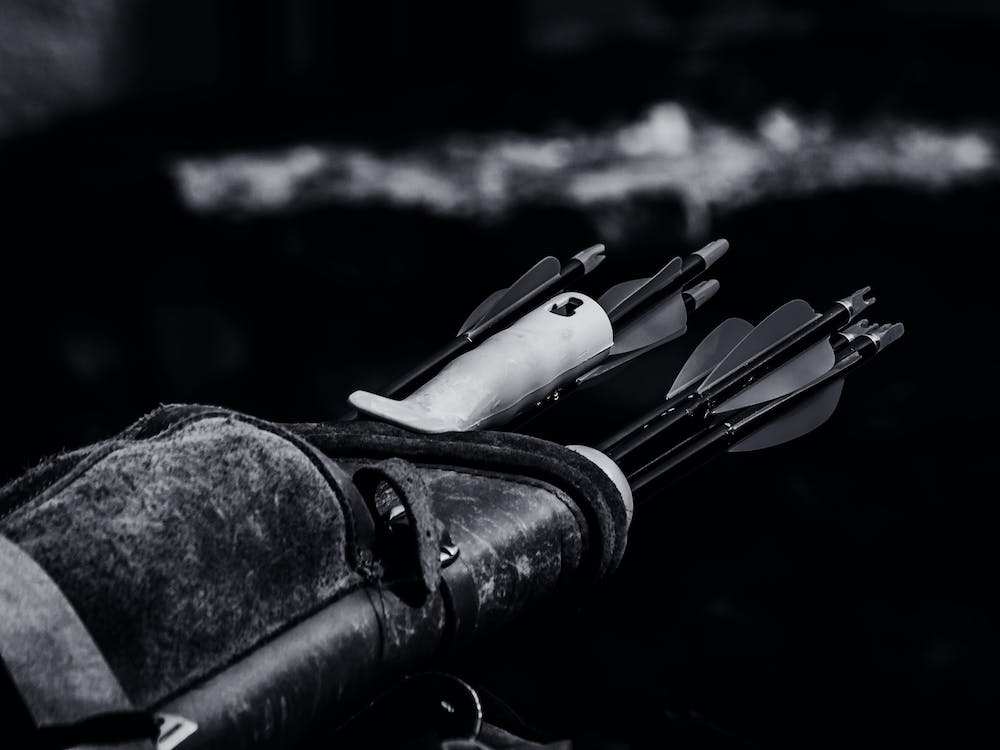

Learn to level up from 1 to 60!

Out of the nine classes, The hunter is the best at leveling up in World of Warcraft Classic. They have so many small things that add
a lot of class flavor and make them feel unique.
This guide will help you to master the process of leveling up as a hunter, whether for casual enjoyment, speedruns, or world-firsts.
Leveling up in World of Warcraft Classic can be very difficult compared to many modern games, especially modern World of Warcraft.
In Classic WoW, the game will not hold your hand. There will be no quest markers telling you where to go, and no markers above
creatures telling you if they are the one you need for your quest. You will have to read through all of the quest text on your own
and keep a vigilant eye out for quest requirements.
Why choose the hunter?
It's easy! You have so many tools up your sleeve to help you while leveling up. Not to mention, you have a pet friend that will gladly
take the hits while you stand back with your bow and let loose. You also have a major advantage on every other class while leveling up
in the early levels thanks to your pet, allowing you to get ahead of other levelers in the early zones.
Check out the rest of my guide for more great tips and tricks for leveling up a hunter.